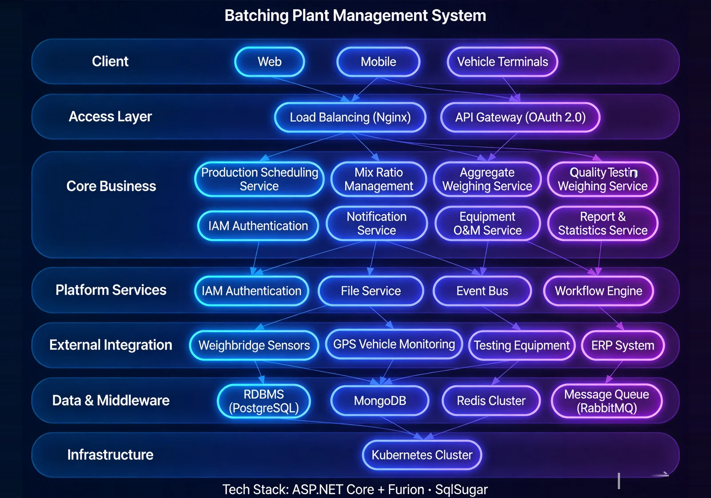

The Mixing Station Management System is a full-process digital platform for concrete batching plants. Addressing the management pain points of on-site batching plants — loose mix-designation control, chaotic production scheduling, and unclear material consumption — the system delivers mix-designation preset, full-lifecycle production order management, material consumption statistics, and cross-project settlement document generation. It ensures accurate concrete mix proportions and traceable processes, helping enterprises improve production efficiency and reduce raw-material waste.

Key Features
The system covers six core modules: production management, material usage reports, station configuration, concrete mix, external orders, and requisition initiation.
Production Management
Centralised creation, viewing, and management of all concrete production orders, with scheduling, production issuance, status tracking, production switchover, and delivery — full lifecycle.
Material Usage Reports
Statistics on actual consumption of each grade material during concrete production, comparing with budgeted mix to analyse raw-material efficiency.
Station Configuration
Define station type, assign administrators and production workshops.
Concrete Mix Management
Pre-set raw-material mix proportions for different strength grades, as the authoritative basis for material requisition.
External Orders
Centralised management of concrete orders produced for other projects, with cross-project settlement and capacity analysis.
Requisition Initiation
Site supervisors or engineers submit concrete production requisitions, which enter the batching schedule after review.
System Architecture

Production Flow
The system adopts a batching production closed-loop architecture: requisition → review → scheduling → production → delivery → settlement. Integrated with the Engineering Budget Management System for real-time concrete cost aggregation, and with the Materials Management System for timely raw-material supply.
Application Scenarios
Suitable for concrete production order scheduling, precise mix control, material consumption and cost analysis, and cross-project OEM settlement documents.

Production Order Scheduling
Centralised management of all concrete production orders with scheduling, production issuance, status tracking, production switchover, and delivery — full lifecycle.

Precise Mix Control
Pre-set raw-material mix proportions for different strength grades, ensuring accurate and controllable production process.

Material Consumption & Cost
Statistics on actual consumption of each grade material, comparing with budgeted mix to analyse raw-material efficiency and support cost control.

Cross-Project OEM Settlement
Centralised management of concrete orders produced for other projects, with cross-project settlement and capacity analysis.
Advantages & Cases
Real-time Mix Proportion Adjustment
Supports real-time online adjustment of the mix proportion, ensuring stable concrete quality, and flexibly meeting the strength and process requirements of different construction scenarios.
Real-time Cost Aggregation
Links with the engineering budget management system to realize real-time aggregation of concrete costs, making the deviation between production material consumption and budget quantity visible instantly.
Full Production Process Transparency
Covers the entire life cycle of material request, review, production scheduling, production, distribution, and settlement, with real-time access to production progress and quality data.
Cross-project Contract Manufacturing Settlement
Supports cross-project contract manufacturing and independent settlement, enabling flexible allocation of production capacity resources and maximizing utilization rate.
Material System Linkage
Deeply linked with the material management system, synchronizing raw material inventory in real time, and automatically triggering material shortage warnings to ensure production continuity.
Quality Traceability Closed Loop
The mix proportion, raw material source, production time, and quality inspection report of each batch of concrete are recorded throughout the entire link, enabling quality responsibility traceability.
Requirement Research
Gain in-depth understanding of the mixing plant's production process and mix proportion management requirements, and sort out the integration points with the budget and material systems.
System Deployment
Supports local deployment and cloud deployment, adapting to the management requirements and on-site network environments of mixing plants of different scales.
Training and Launch
Provides tiered training for administrators, operators, and engineers, covering mix proportion maintenance, production scheduling, cost aggregation, and report use.
Launch Acceptance
Acceptance is carried out in three stages: production process testing, data linkage verification, and performance stress testing, to ensure the system is stable before official delivery.
Concrete Supply Management for Large Projects such as City Rail Transit and a Government Office Building
Background: The project has a huge demand for concrete, and the accuracy of the mix proportion and production scheduling efficiency directly affect the construction progress and structural quality.
Challenges: In the traditional mode, mix proportion adjustment relies on manual experience, production progress and cost data are scattered, and cross-project production capacity scheduling lacks data support.
Solution: Deploy the mixing plant management system to realize precise control of the mix proportion, digital management of the entire production process, and real-time cost aggregation.
Result Data: The stability of concrete quality and production efficiency have both been improved, and the deviation between production data and budget quantity is controllable.
Customer Testimonial: ——